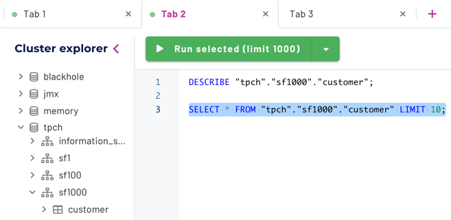
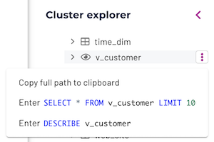
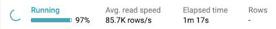

Query editor#
The Starburst Enterprise web UI includes the query editor, a web-based IDE for writing and executing SQL queries.
Requirements#
The query editor is enabled by default in the Starburst Enterprise web UI. Your account in the web UI must have access to your configured catalogs, schemas, and tables in order to explore and query them.
You can optionally enable the cluster’s query logger to allow the query editor to persist work between browser sessions.
Editor pane#
Use the editor pane to type your SQL query of interest, then press the ▶ Run button to execute your query. You can also press Ctrl+Enter (⌘+Enter on Mac) to invoke the currently visible Run button.
There are two variations of the Run button. Use the drop-down arrow in the current Run button to select between the two Run options, which are:
▶ Run (limit 1000): This default option retrieves up to 1000 rows of the query’s result set and places it in the results pane. Result sets longer than 1000 rows are truncated as if
LIMIT 1000was appended to the query. You can use the Download link at the top of the results pane to download a CSV file of this truncated result set as long as it is still visible in the results pane.▶ Run and download: This option retrieves a query’s entire result set and streams it in CSV format to a file named
results.csvin the current user’s default Downloads directory. If a file of that name exists, current results are streamed toresults-2.csvand so on. While the download proceeds, a few rows of sample results appear in the results pane. Use this option when you expect a large result set from a query.
You can also execute a portion of the currently written SQL statement in the query editor, by selecting that portion and pressing the Run button of choice. When text is selected, the Run button options change into:
▶ Run selected (limit 1000)
▶ Run and download selected
These allow you to run the current selection as long as it is valid SQL.
Catalog and schema selectors#
The editor pane includes drop-down selectors to optionally specify the default catalog (disk symbol) and schema (hub symbol) to serve as the context for the query in the current editor tab. This is similar to using the SQL USE command to specify the current query context.
If a valid USE command occurs as part of the current query, its specified
catalog or catalog plus schema are reflected in the drop-down selectors.

Editor pane vertical ellipsis menu#
The ︙ menu at the top of the editor pane includes the following options:
Copy, to copy the current editor selection to the clipboard.
Prettify, to format the currently selected query to add spaces, tabs, and newlines where needed.
Command palette, which opens a dialog from which you can select editing commands to run at the current cursor location or run on the current editor selection. With the cursor in the Editor pane, you can also press F1 to open the Command palette. Press Esc to close the palette.
Multiple editor tabs#
Click the plus icon (+) to open multiple tabs to keep queries organized and allow multitasking. You can start a long-running query in one tab, and switch to another tab to run additional queries while your first query executes. The query in the previous tab continues to run, and displays results when it completes.
Note
By default, the contents of all tabs are reset between web UI login sessions. To persist tab content across login sessions, configure the query logger for your cluster.
Cluster explorer pane#
The Cluster explorer pane displays an expandable, hierarchical view of catalogs (disk symbol), schemas (hub symbol), tables (grid symbols) or views (eye symbols), and columns configured in the current cluster. To expand an element, click its > expanded arrow. To collapse an element, click its v collapsed arrow. You can click on a catalog to collapse all schemas under it. Similarly, you can click on a schema to collapse its table list.
Note
When browsing a catalog, if you don’t find a familiar schema, table, or column that you know from another context, contact your site’s data administrator. It is possible that the cluster connection was made with a catalog properties file that restricted access to that expected element.
Pop-up vertical ellipsis menus#
The Cluster explorer displays vertical ellipsis menus (︙) on the right of an object’s name when you select or hover over the name. These menus appear for catalogs, schemas, tables, views, and columns. The menu options apply only to the current object.
The standard Trino path to a table takes the form catalog.schema.tablename.
When the cluster explorer menu options return a path, they wrap each path
element in quotes. This takes into account possible spaces and special
characters in path element names that may be supported by the current catalog.
For example: "catalog"."schema"."tablename"
Object |
︙ menu options |
|---|---|
Catalog |
Copy name to clipboard — places the quoted catalog name in
the clipboard. Example: Select catalog — Set this catalog as the default for this editor tab. |
Schema |
Copy full path to clipboard — places the quoted path to this
schema in the clipboard. Example: Select schema — Sets this schema and its catalog as the defaults for this editor tab. |
Table |
Copy full path to clipboard — places the quoted path to this
table in the clipboard. Example: Enter SELECT * from table LIMIT 10 — places the statement
Enter DESCRIBE table — places the statement |
View |
Same options as for a table, with the word |
Column |
Copy name to clipboard — places the quoted column name in
the clipboard. Example: |
Results pane#
When your query is finished executing, the result set appears in the table below the editor pane.
Above the results table on the left, the status bar displays current query statistics:
Status - Displays progress while the query is processed, and final status when complete.
Avg. read speed - From all sources, in rows per second.
Elapsed time - In seconds, since query processing started.
Rows - The number of rows returned.
While running, a progress estimate is shown:
If your result set is very wide, or is greater than 1000 rows, it is truncated.

On the right above the results, complete details on a query’s history, including performance statistics and execution plan, are available by clicking on the Query details link in the status bar:
You can use the Web UI link to view information such as a query’s live plan and performance for the current stage of live queries.
If you used the Run (limit 1000) run option, then once a query has completed, a Download link appears for the results set in the results pane. Results are not saved, and are only available until a new query is run or your page is closed or refreshed, whichever comes first.

Limitations#
Connections using Kerberos pass-through are not supported.
PREPAREandEXECUTEstatements are not supported.